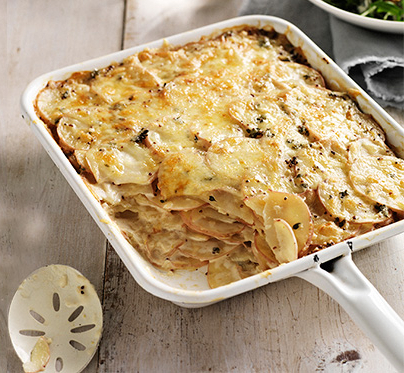

Potato Gratin

Description
Ingredients
- 300 mL Lite cooking cream
- 2 tsp wholegrain mustard
- 2 tsp fresh thyme leaves
- 2 tsp garlic paste
- salt and pepper
- 1.2 kg potatoes, peeled, cut into 2mm-thick slices
- 0.5 cups grated light tasty cheese
Recipe
- Preheat oven to 180C. Grease a 1.5L (6 cup) baking dish with oil.
- Combine Lite Cooking Cream, mustard, thyme and garlic in a bowl.
Season with salt and pepper.
- Add potato to milk mixture and toss to coat. Arrange potato in
the prepared dish, overlapping slightly. Pour over excess cream
mixture. Sprinkle with cheese
- Bake for 50-60 minutes or until tender and golden.
Return home